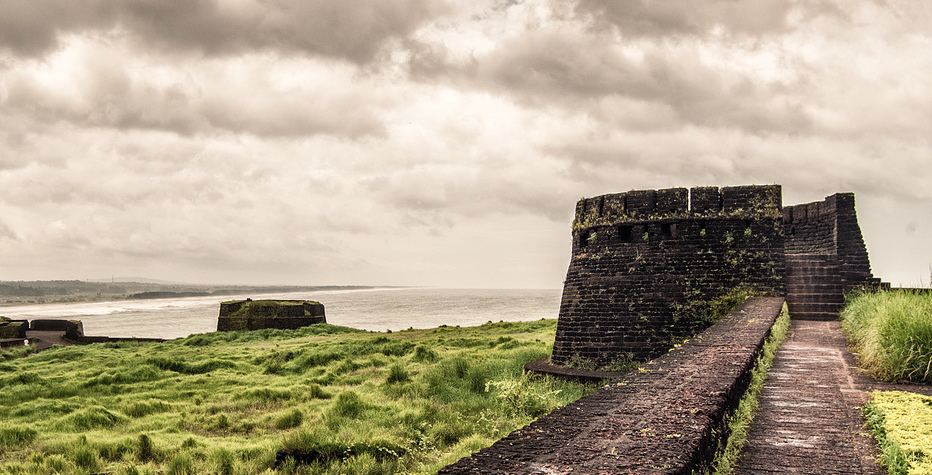

BEKAL FORT
Distance from Perne
25.8kms

Bekal Fort is the largest fort in Kerala, situated at Pallikkare, Kasaragod district spreading over 40 acres (160,000 m2). Some important features of this fort are the water-tank with its flight of steps, the tunnel opening towards the south, the magazine for keeping ammunition and the broad steps leading to the Observation Tower, which is a rarity.
From Bekal Fort, one has an ample view of towns in the vicinity like Kanhangad, Pallikkara, Bekal, Kottikkulam, Uduma etc. The nearest railway stations are Bekal Fort, Kotikulam, Kanhangad, and Kasargod. This observation center had strategic significance in discovering even the smallest movements of the enemy and ensuring the safety of the Fort.
